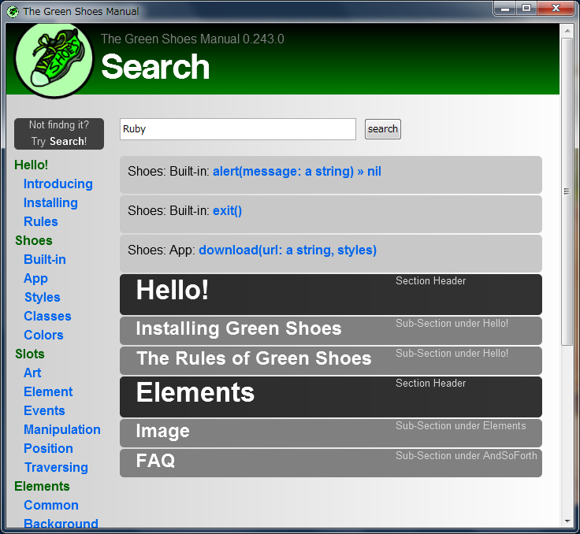
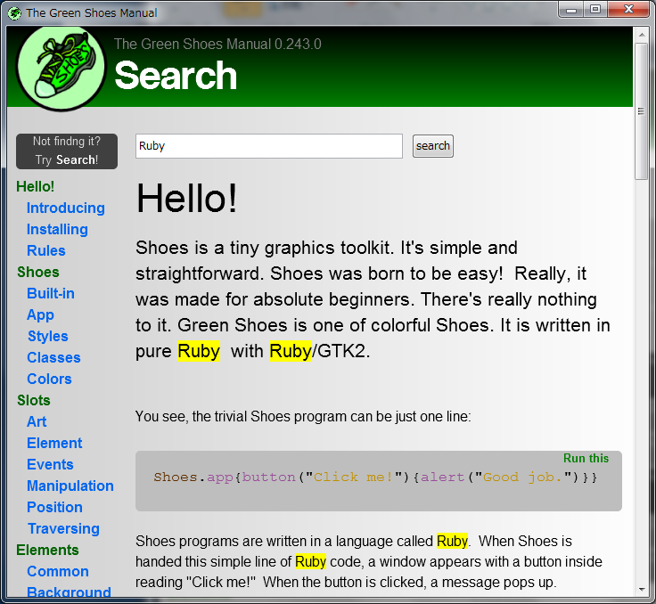

Ruby the Red Gem of Programming
This is an archived post This is an archived post
Previous
Index
Next
Manual Search on Green Shoes
July 2 2011, 9:06 AM
by ashbb
I've finally implemented a search function for built-in manual of Green Shoes.
Try out the manual search to find the method you've lost.
Happy coding in Green Shoes!
ashbb
 
452 views and 0 responses